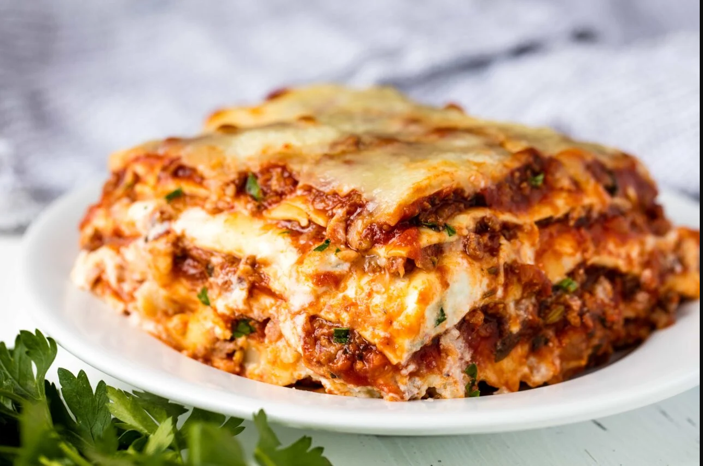

How to make Lasagna

Description
Johnsonville Italian Sausages make it simple to enjoy authentic Italian flavor. This classic lasagna dish is made so much easier when you've got Johnsonville backing you up.
The flavor of the Italian sausages will help to make this recipe your new lasagna favorite!
- 1 (16 ounce) package Johnsonville® Italian Ground Sausage
- 12 lasagna noodles, cooked and drained
- 1 medium onion, chopped
- 2 garlic cloves, minced
- In a skillet, cook sausage, onion and garlic until pork is no longer pink and onion is tender; drain. Add marinara sauce and oregano; simmer for 5 minutes. In a bowl, combine ricotta cheese, egg, 1/4 cup Parmesan and spinach.
- In a greased 13-in. x 9-in. x 2-in. baking dish, spread 1 cup meat sauce. Arrange 3 noodles over sauce. Spread one-fourth of the ricotta cheese mixture over the noodles, top with 1 cup of meat sauce.with 1/2 cup mozzarella cheese. Repeat process 3 times.